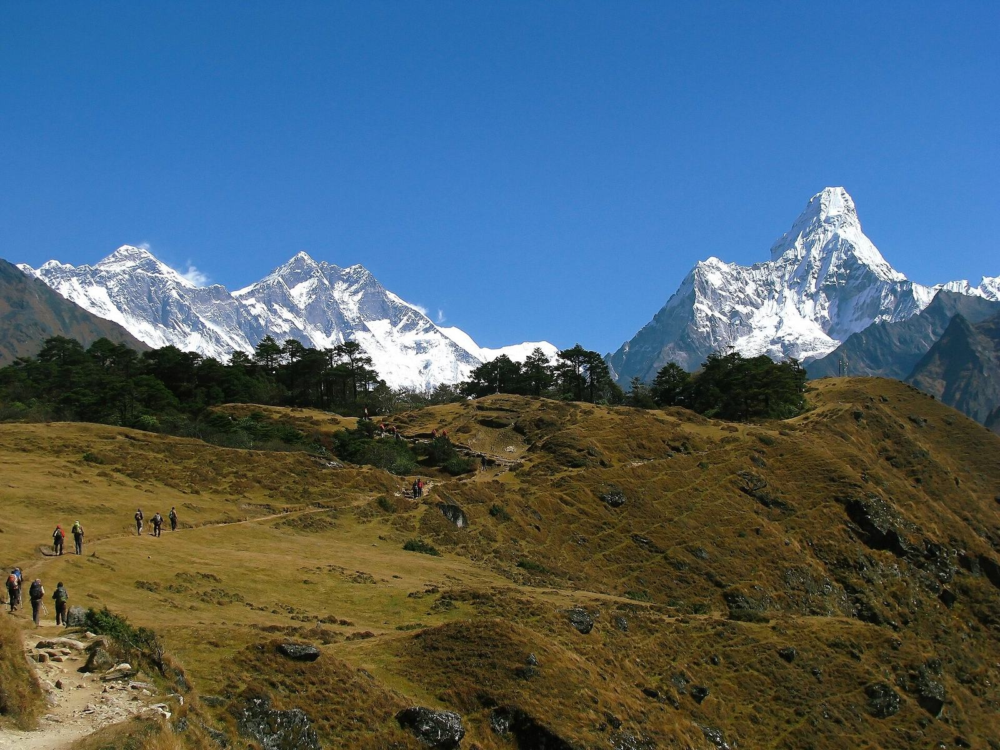
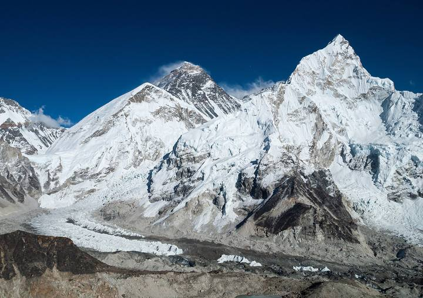

Everest View Trek
A seven-day trek from Lukla to Namche Bazaar, Tengboche monastery and Khumjung, with views of Everest, Lhotse and Ama Dablam and a highest point of 3,880 m.


- Duration
- 5–8 days
- Distance
- 62 kmapproximate
- Highest point
- 3,880 mEverest View Hotel · 12,730 ft
- Highest night
- 3,860 mTengboche
- Difficulty
- ModerateTeahouse lodges
- Best months
- Mar–May, Oct–Nov
Is this trek right for me?
The walking
7 days in all. Most walking days are 5 to 6 hours on foot, and the longest is about 7 hours. Five to seven hour days with real climbs, usually below 4,500 m.
The height
The highest night is at 3,860 m. You will notice the thinner air, but going slowly is usually enough.
Where you sleep
In lodges every night: a simple twin room, a shared bathroom and hot meals in a warm dining room.
The help you need
You may walk without a guide here, but we strongly recommend one, and a porter if you would rather not carry a full pack.
What it costs
A guided trip with a trekking company usually costs USD 800 to 1,200 a person, going by the prices 7 companies published for 2026.
Overview
This is the first third of the Everest Base Camp trail, walked for its own sake. You fly to Lukla, climb to Namche Bazaar, spend a day on the ridge above it where Everest first comes into full view, and go on to the monastery at Tengboche before turning round. The way back passes through Khumjung, the largest village in Khumbu.
It suits people who have a week, not a fortnight, families with older children, and anyone who wants to see the mountain without the cold nights and thin air above 4,000 m. The highest bed is at 3,860 m. That is still high enough to give you a headache if you rush, so the plan keeps the standard second night in Namche.
Do not mistake short for flat. The climb to Namche gains 600 m in one go, and the trail to Tengboche drops to the river and climbs another 600 m. In return the paths are wide, the lodges on this stretch are among the most comfortable on any trek in Nepal, and there is a hot shower and a bakery at almost every stop.
Highlights
- Everest, Lhotse and Ama Dablam from the ridge above Namche
- Namche Bazaar, its lanes, bakeries and Saturday market
- Tengboche monastery and its afternoon prayers
- Khumjung, with the school Hillary founded and its old monastery
- High suspension bridges over the Dudh Koshi
Moderate: Two sustained 600 m climbs and a top sleeping height of 3,860 m, on wide, well-built trails with short days.
Altitude profile
Height at the end of each day, with the high points in between. Dots are the places you sleep.
The ascent rate is within the usual guideline of about 500 m of sleeping altitude a day above 3,000 m. People still differ, so watch for symptoms. Open in the acclimatization checker.
Day by day
About 27–33 h of walking in total. Times are for a steady pace with short breaks; add more for photos and tea.
-
Day1
Fly to Lukla, walk to Phakding
A morning flight and an easy three hours down the valley past mani walls and small farms. Phakding is lower than Lukla, which makes the first night easier on your body.
16 places to stay in Phakding, such as Trekkers Lodge, Samjhana Guesthouse and Buddha Lodge. See them
- Sleep at
- 2,610 m
- Change
- −250 m
- Walking
- 3–4 h
- Distance
- 8 km
-
Day2
Phakding to Namche Bazaar
Phakding to Monjo to Namche Bazaar
The trail stays near the river as far as Monjo, where permits are checked, then crosses the high bridge and climbs 600 m through pine forest to Namche. This is the hardest day of the trek. Go slowly, drink often and expect to feel the height when you arrive.
53 places to stay in Namche Bazaar, such as Comfort Inn, The Nest at Namche and KalaPatthar Lodge. See them
- Sleep at
- 3,440 m
- Change
- +830 m
- Walking
- 5–6 h
- Distance
- 11 km
-
Day3
Acclimatization day: Everest View Hotel
Namche Bazaar to Everest View Hotel to Namche Bazaar
Climb past the national park visitor centre to the Syangboche shelf and along to the hotel terrace, about 440 m above town. Everest, Lhotse and Ama Dablam are in front of you by mid-morning. Have tea, walk back down and rest.
53 places to stay in Namche Bazaar, such as Comfort Inn, The Nest at Namche and KalaPatthar Lodge. See them
Rest day to get used to the height- Sleep at
- 3,440 m
- Change
- 0 m
- High point
- 3,880 m
- Walking
- 3–4 h
-
Day4
Namche to Tengboche
Namche Bazaar to Kyangjuma to Phunki Tenga to Tengboche
The trail contours high above the Dudh Koshi with the mountains ahead all morning, drops through pine forest to the river at Phunki Tenga, then climbs 600 m in long zigzags to the monastery. Try to arrive in time for the afternoon prayers.
7 places to stay in Tengboche, such as Trekker's Lodge, Tengboche Guest House and Hotel Himalayan. See them
- Sleep at
- 3,860 m
- Change
- +420 m
- Walking
- 5–6 h
- Distance
- 10 km
-
Day5
Tengboche to Namche by way of Khumjung
Tengboche to Phunki Tenga to Khumjung to Namche Bazaar
Go back down to the river and up to the junction at Sanasa, then take the upper path to Khumjung to see the school and the monastery. Cross the shelf past the Syangboche airstrip and drop into Namche. If you are tired, the direct trail saves an hour.
53 places to stay in Namche Bazaar, such as Comfort Inn, The Nest at Namche and KalaPatthar Lodge. See them
- Sleep at
- 3,440 m
- Change
- −420 m
- Walking
- 5–6 h
-
Day6
Namche to Lukla
Namche Bazaar to Monjo to Phakding to Lukla
The whole valley in one long, mostly downhill day, with a last hour uphill into Lukla. If your knees complain or your flight is a day later, break it with a night in Monjo or Phakding.
28 places to stay in Lukla, such as Everest Plaza Lodge, Alpine Lodge and Lama Hotel. See them
- Sleep at
- 2,860 m
- Change
- −580 m
- Walking
- 6–7 h
- Distance
- 19 km
-
Day7
Fly out from Lukla
Morning flight to Kathmandu or Manthali, weather permitting. A cancelled flight means another night in Lukla, so do not plan to leave Nepal the same evening.
Travel day- Sleep at
- 1,400 m
- Change
- −1,460 m
- Flight
- 1 h
Ways to change it
Namche only, five days
Leave out Tengboche: fly in, walk to Namche in two days, spend a day on the ridge with a loop through Khumjung, and walk back to Lukla in a day or two. The highest bed is then 3,440 m.
A night in Khumjung
Stay in Khumjung on day 5 instead of dropping back to Namche. It is quieter and colder than Namche, with Ama Dablam in view to the east, and adds only an hour to the next day.
On to Ama Dablam Base Camp
With two more days, continue from Tengboche to Pangboche and walk up to the base camp at 4,570 m and back before turning for home.
Route map
The map loads when you scroll here. It needs a connection the first time; tiles you have viewed stay available offline.
The solid line follows footpaths mapped in OpenStreetMap. It is a guide to where the route goes, not a navigation track: trails are rerouted after landslides, so follow the signs and people on the ground. Marker positions come from OpenStreetMap where we could match a place, and from our own estimates elsewhere.
Download the trail for a map app A GPX file with 59 km of mapped path and every stop. It opens in free apps such as Organic Maps.
When to go
- January: good
- February: good
- March: best time
- April: best time
- May: best time
- June: difficult
- July: difficult
- August: difficult
- September: good
- October: best time
- November: best time
- December: good
Because the trek stays below 3,900 m it works in winter too: December to February is cold and often very clear, with ice on shaded stretches in the morning. October and November have the steadiest views, March and April bring rhododendron bloom below Tengboche. In the monsoon the mountains are mostly hidden and flights are erratic.
Permits and guide rules
Guide strongly recommended. Khumbu has not enforced the national guide requirement, and this is the busiest and best-marked trail in the country, so finding the way is not the issue. A licensed guide is still useful on a short first trek: they set a pace that suits the Namche hill, hold beds in peak season and deal with the airline when flights are delayed.
Sagarmatha National Park
National parkSagarmatha National Park entry permit · Department of National Parks and Wildlife Conservation
| Foreign nationals | NPR 3,000 | person, single entry |
| SAARC nationals | NPR 1,500 | person, single entry |
| Nepali citizens | NPR 100 | person |
Where: At the park gate in Monjo, or in advance at the park counter in the Tourist Service Centre, Bhrikutimandap, Kathmandu.
Children under 10 enter free. Nepali press reports from 2024 to 2026 give the same NPR 3,000, 1,500 and 100. Whether 13% VAT is added for foreigners is disputed: an independent guide says tax has been folded into park fees since 2019, while several agency sites still quote NPR 3,390. We found no official statement, so carry the difference in cash. Keep the permit handy; it is checked at the gate.
Khumbu municipality permit
Local permitKhumbu Pasang Lhamu Rural Municipality entry permit · Khumbu Pasang Lhamu Rural Municipality
| Foreign nationals | NPR 3,000 | person |
| SAARC and Chinese nationals | NPR 2,000 | person |
Where: At the municipality's tourist information centre in Lukla when you land, or at the Monjo checkpoint if you walk in from the road. It cannot be bought in Kathmandu.
The municipality calls it a Trek Card: staff take your passport details and a photo, which takes about 15 minutes. It has stood in for the TIMS card in Khumbu since October 2017, when the fee was NPR 2,000. The municipality's own page now lists NPR 3,000, with NPR 2,000 for SAARC and Chinese passport holders, and its 2024–25 visitor and revenue figures fit that split. A few agency pages say every foreigner pays NPR 3,000. Bring rupees in cash.
Fees and rules change, sometimes mid-season. Treat these as a planning guide and confirm with the Nepal Tourism Board, the Department of Immigration or a registered agency before you travel. Last reviewed 2026-11. All permits and fees
Getting there
Fly to Lukla and back. Flights leave soon after dawn from Kathmandu or, in the spring and autumn peaks, from Manthali in Ramechhap, and are cancelled when cloud covers the Lukla approach. On a one-week trip a lost day matters, so keep a spare one in hand.
-
Flight: Kathmandu to Lukla · 35 min
Common outside the peak weeks. Sit on the left going in for the mountain view.
-
Flight: Manthali to Lukla · 20 min
Used for most flights in April, May, October and November. The airstrip is four to five hours by road from Kathmandu.
-
Jeep: Kathmandu to Lukla · 1–2 days + 2 days' walk
Road to Salleri and Thamdanda, then on foot. It doubles the length of this trek, so it is only worth it when flights have stopped for days.
Hazards on this route
Altitude at Namche and Tengboche
You fly to 2,860 m and sleep at 3,440 m the next night, a quick rise for anyone coming from sea level. Mild headaches and broken sleep at Namche are common. Do not go on to Tengboche with a headache that has not cleared; an extra night in Namche costs little on a trek this short.
Lukla flights
Cloud closes the airstrip often, sometimes for several days. Keep at least one spare day between the trek and your international flight, and two if you are travelling near the monsoon.
Animals on the trail
Yak, dzo and mule trains use the same path. Wait on the uphill side, never on the outer edge, and let them clear a bridge before you step onto it.
Ice in winter
From December to February the shaded parts of the Namche hill and the forest climb to Tengboche can be icy until mid-morning. Start a little later, use poles and carry light traction spikes.
Practical tips
- Even in spring, pack a down jacket and a warm sleeping bag. Tengboche nights are at or below freezing for most of the trekking year.
- Namche has cash machines, but they are often empty or offline. Bring enough rupees from Kathmandu for the whole week.
- Walk the Namche hill slowly enough to hold a conversation. Arriving an hour later costs nothing; arriving exhausted costs you the next day.
- With children or older walkers, add a night at Monjo on the way up to split the climb to Namche.
- Treat all drinking water. Lodges along the whole route sell boiled or filtered water for refills.
Cash machines on the route: Lukla, Namche Bazaar. They run out of cash and go offline, so carry what you need from Kathmandu. Work out how much.
Plan this trek
Choose your dates and see the whole trip on one page: where you sleep each night, who can help you, what it may cost and the papers you need. Then ask for a price.
More tools for this trek
Who can help you on this trek
You may walk without a guide here, but we strongly recommend one, and a porter if you would rather not carry a full pack.
-
A trekking company that arranges everythingUsually USD 800 to 1,200 a person for everything on the trek.
-
A guide, and a porter to carry your bagAbout USD 25 to 40 a day for the guide and USD 18 to 25 for the porter.
-
A guideAbout USD 25 to 40 a day.
-
A porter to carry your bagAbout USD 18 to 25 a day.
-
On your ownNo daily cost, and nobody to turn to if something goes wrong.
Do you work on the Everest View Trek route as a guide, porter or company? Join TrekkSewa.
Quick answers
How long does the Everest View Trek trek take?
Most people take 5–8 days. The itinerary on this page is 7 days, including 1 day for rest and acclimatization.
How high does the Everest View Trek trek go?
The highest point is Everest View Hotel at 3,880 m (12,730 ft). The highest place you sleep is Tengboche at 3,860 m.
How difficult is it?
We grade it moderate. Two sustained 600 m climbs and a top sleeping height of 3,860 m, on wide, well-built trails with short days.
Which permits do I need?
Sagarmatha National Park, Khumbu municipality permit. Fees and where to get each one are listed in the permits section above.
Do I need a guide?
Khumbu has not enforced the national guide requirement, and this is the busiest and best-marked trail in the country, so finding the way is not the issue. A licensed guide is still useful on a short first trek: they set a pace that suits the Namche hill, hold beds in peak season and deal with the airline when flights are delayed.
When is the best time to go?
Mar–May, Oct–Nov are best. Because the trek stays below 3,900 m it works in winter too: December to February is cold and often very clear, with ice on shaded stretches in the morning. October and November have the steadiest views, March and April bring rhododendron bloom below Tengboche. In the monsoon the mountains are mostly hidden and flights are erratic.
The stages on this route are well established. Reviewed 2026-11. Trails, lodges and rules change; confirm locally before you rely on any detail. Report a correction.
Similar treks
More in Everest
EverestEverest Base Camp
Twelve days through Sherpa country to the foot of the Khumbu Icefall
 Everest
Everest
Ama Dablam Base Camp
Under the west face of Ama Dablam, with every night below 4,000 m
 Everest
Everest
Gokyo Lakes & Gokyo Ri
A quieter valley than base camp, ending at glacial lakes and Gokyo Ri
 Everest
Everest
Pikey Peak
A week in lower Solu, climbing to a 4,065 m sunrise over the Everest range